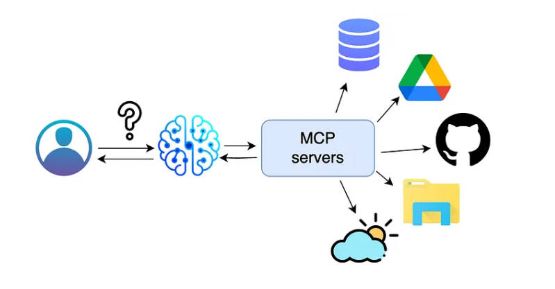
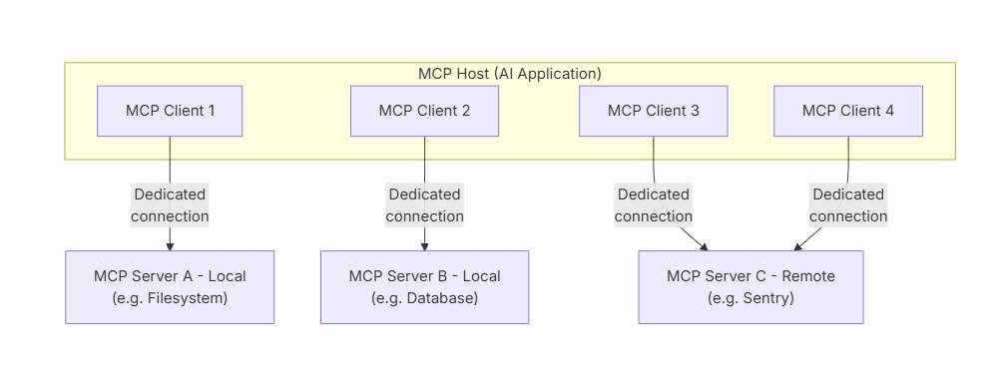

Model Context Protocol #
MCP 是什么？ #

通常我们说的 AI 模型指的是 LLM(Large Language Models)，例如 GPT-4、Claude 等，它们擅长理解问题、写代码、生成文本、翻译等自然语言任务。可以将它们看作是一个封闭式的超级图书馆，无法与外面的世界连接。
例如你需要 AI 去数据库实时查找数据，或者操作系统，它没办法帮你实现，需要 MCP 辅助 AI 完成这个动作。
MCP 是一个 开放的标准协议，把“LLM ↔ 各种外部工具/数据源”的通信方式统一成 JSON‑RPC 这种结构化格式，就像给 LLM 做了一个通用的“USB‑C 转接器”。
- Model：LLM 自己，只负责“思考和决策”；
- Context：外部资源（文件、API、数据库、设计工具等）；
- Protocol：统一的 JSON 协议，规定怎么发现工具、怎么传参数、怎么返回结果。
没有 MCP 时，大家是怎么做的？
- 每家模型厂、每个应用都搞一套私有插件/工具系统，生态割裂、开发者要重复造轮子；
- 安全模型和权限控制不统一，对企业来说难以审计和治理。
有了 MCP 后：
- 只要某个工具有一个 MCP server，任何支持 MCP 的 LLM/客户端都能直接“看见并使用”；
- 开发者围绕同一个协议扩展生态，复用度高，企业更容易做统一安全策略。
MCP 架构 #

- MCP Server: 独立的服务，封装某个系统（例如 Github、Google Drive、Blender）的能力，对外暴露成统一的 JSON schema 工具接口，通常是轻量服务（Python/TS/Go），通过 WebSocket、HTTP SSE 或者 Unix socket 通讯、并遵守最小权限、安全认证机制（OAuth、JWT、API Key）。
- MCP Client: 运行在“宿主应用”里，一个可以连接到 MCP server 的组件，发现 MCP server 能力（握手获取 JSON schema），避免硬编码集成，把用户请求转成对各 server 的调用，收集结果再注入给 LLM。
- MCP Host: 维护多个 MCP Client 的 AI 应用，且能够使用 LLM，例如AI 聊天对话框、Cursor IDE、OpenCode agent 都属于 AI 应用，它们维护了多个 MCP Client。
举一个例子说明：你写完了代码，希望你的 Coding Agent 能够自动在 gitlab 帮你发起 MR，并且 @同事 帮你 review 代码。正常情况下 coding agent 是没办法帮你完成这个任务的，这就需要 gitlab 的 mcp 帮你完成。coding agent 会通过 mcp client 对 server 发起一个 MR 请求，server 接收到指令后，会发起 MR，并返回 success。